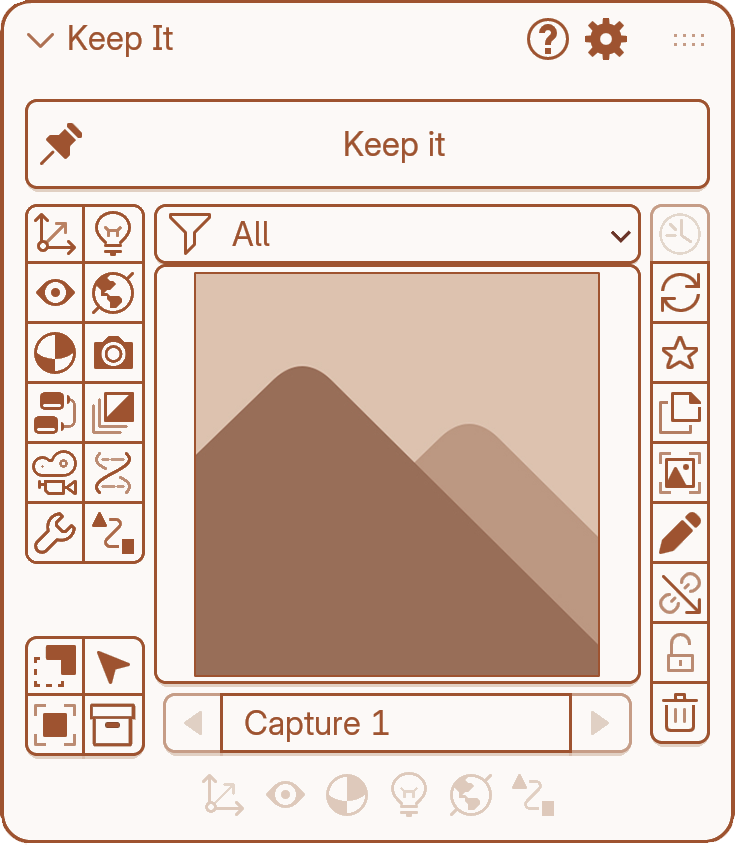
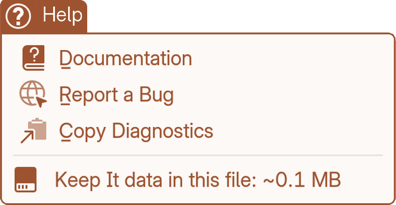

Reporting bugs
1.0.4Where to find it
In the Main panel (open the N-panel in the 3D Viewport and click the Keep it tab), look at the top-right corner of the panel header for the ? button. Click it and choose Report a Bug.
This opens a GitHub issue on the public bug tracker in your browser, with your Keep it version, Blender version and OS already filled in.


What to put in it
Describe the bug clearly
- What happened — what you expected vs. what actually happened.
- Steps to reproduce — the exact sequence of actions that triggers it. If you can reliably reproduce it, that’s the single most useful thing you can provide.
- Which capture/view/job it involves, if relevant — e.g. “a capture with Modifiers on and Selected scope.”
Attach a screenshot or short clip
Layout glitches, missing thumbnails or UI issues are much faster to diagnose with a screenshot than a text description.
Mention your scene setup
If the bug only happens with certain data (e.g. a Geometry Nodes modifier, a linked library, a specific render engine), say so — some bugs are Blender-version- or setup-specific.
Paste your diagnostics
In the same ? menu, press Copy Diagnostics and paste the result into the report. It adds what the pre-filled link can’t: how many captures, views and jobs the file has, and which categories the capture in question stores.
Submit
Press Submit new issue on GitHub. You need to be logged in to GitHub to submit — no account is needed to read existing issues.
Thank you!